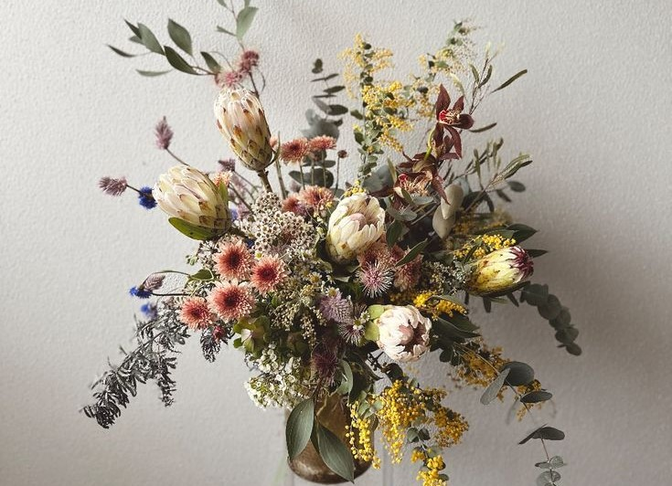

Flora
UX/UI-design and creation of visual identity for a flower shop with a subscription business model.
MoreHormone tracker
Case study to improve the UX/UI-design of an existing hormone and menstrual cycle tracker.
MoreUX/UI-design and creation of visual identity for a flower shop with a subscription business model.
MoreCase study to improve the UX/UI-design of an existing hormone and menstrual cycle tracker.
More